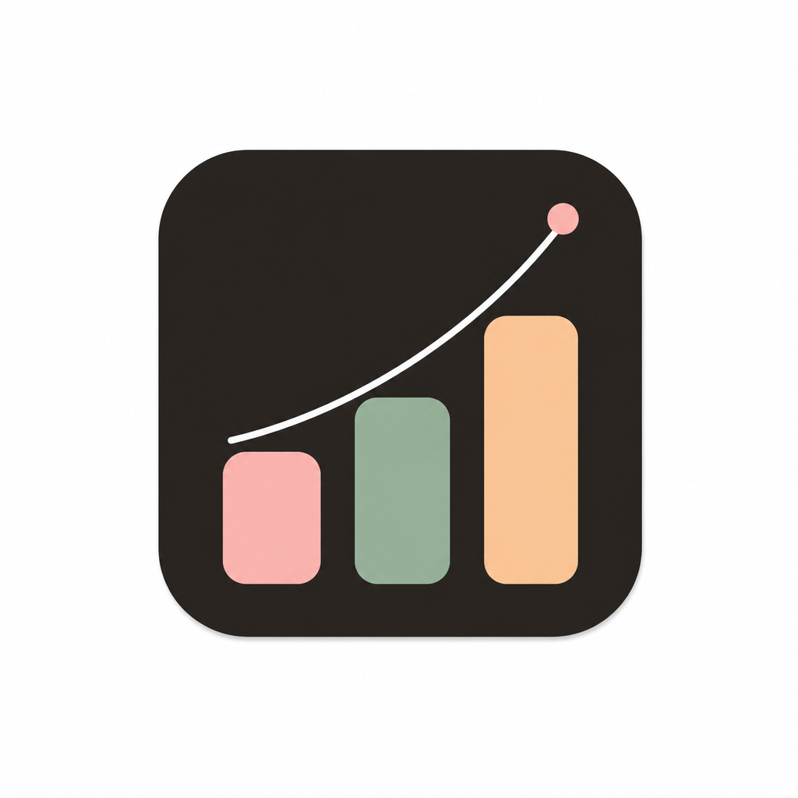
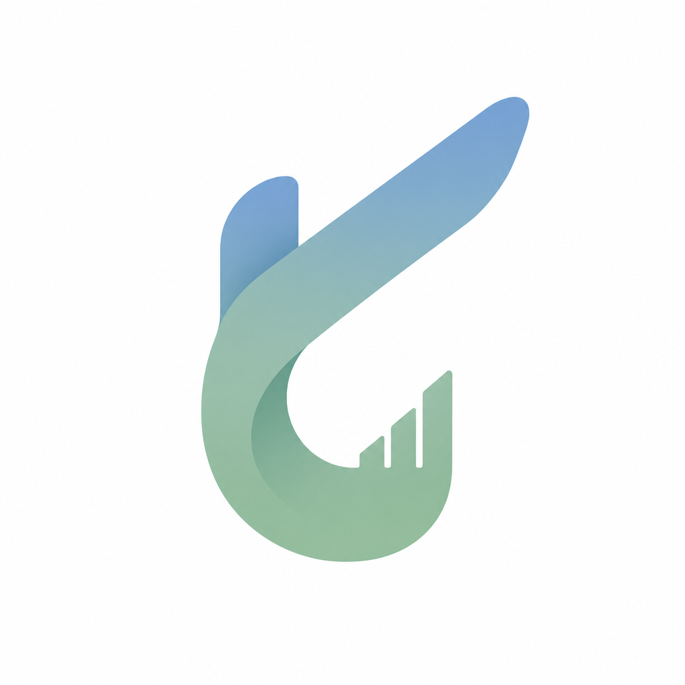
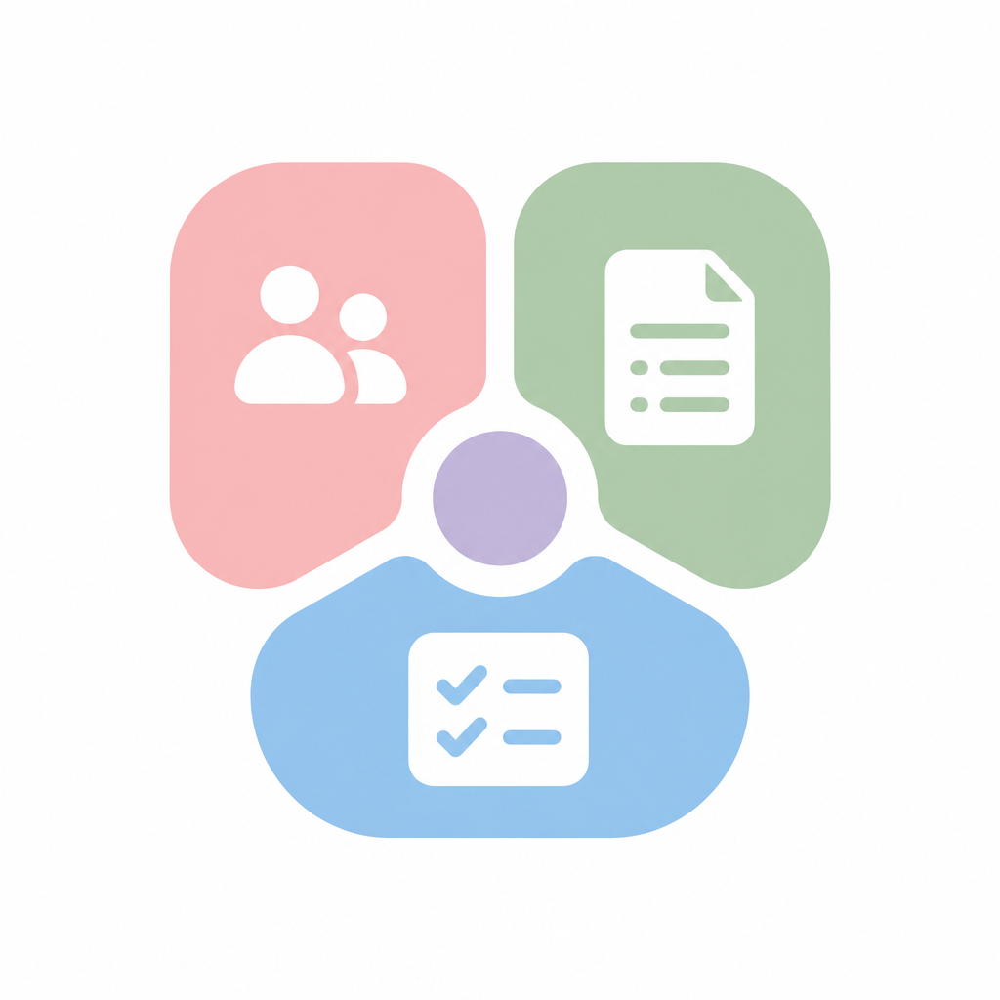
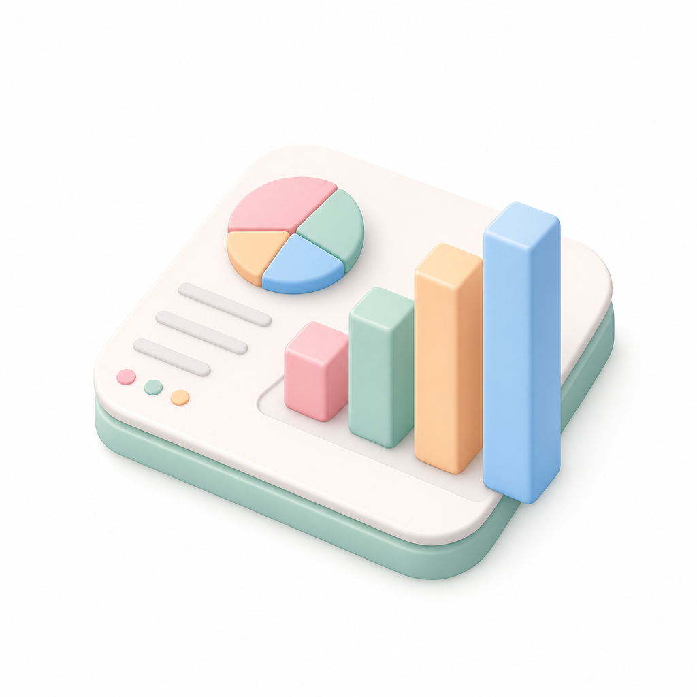

 ۱رشد میلهای نمودار رشد پاستلی روی زمینه تیره — نزدیک به هویت فعلی و عالی برای آیکون اپ. App icon مقیاسپذیر پیشنهادی
 ۲حرفنشان «ک» حرف ک با گرادیان آبیسبز و میلههای رشد — فارسی، متمایز و مدرن. Lettermark فارسی پیشنهادی
 ۴ماژولها افراد + سند + چکلیست حول یک هسته — تصویر سیستمعامل یکپارچه کسبوکار. Platform مفهومی
 ۶داشبورد ایزومتریک پنل محصول با حس نرمافزاری — مناسب مارکتینگ، کمی شلوغتر برای favicon. Product مارکتینگ